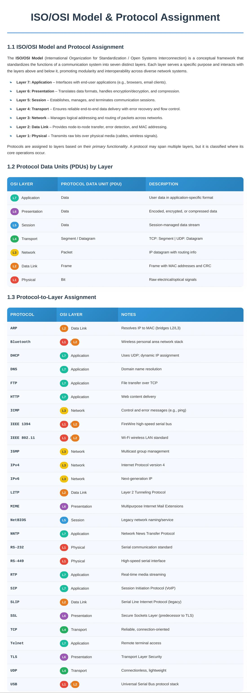 |
2.Practical Part
Protocols Involved in Network Connectivity Verification (Task 2.1)
I. Introduction
The goal of this task was to verify the connectivity to google.com and use Wireshark identify all protocols which were involved in this communication.
II.Execution proof and Command documentation
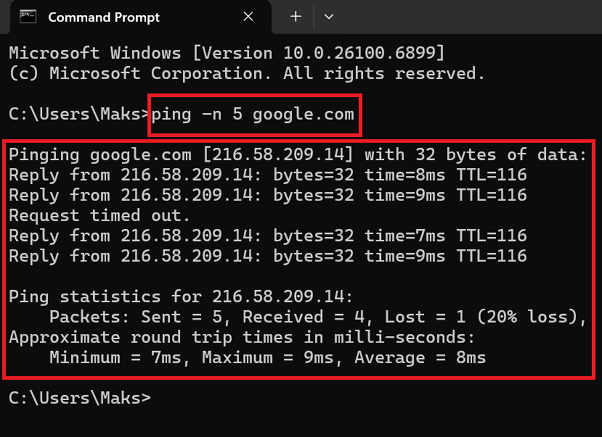
Image 1
I executed the command ping -n 5 google.com. This command sends 5 packets to the Google server, checks if they are reachable, and measures the time it takes for the packet to return.
The command successfully sent 5 packets and received 4 replies, resulting in 1 packet loss (20% loss). The output (Image 1) notes one request "Request timed out," which confirms the Network Layer (L3) successfully routed the ICMP messages and measured the latency, despite the loss.
III. Protocol dissection and ISO/OSI analysis
Step 1: Name resolution
L7 Application Layer: Domain Name Resolution (DNS): Before pinging the computer has to first convert google.com into IP address like 216.58.209.14 using DNS.
L4 Transport Layer: User Datagram Protocol (UDP): To find out the IP address of google.com the computer sends DNS query to DNS server via UDP on port 53. UDP is chosen because it is connectionless, prioritizing speed over reliability, which is essential for fast, low-latency lookups
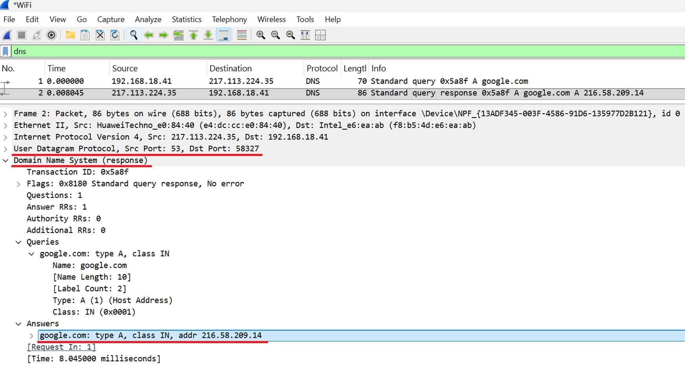
Image 2
Step 2: The diagnostic ping
Once when the IP address is known, the system sends the core diagnostic message. This activity is handled by Network Layer protocols.
L3 Network Layer: Internet Control Message Protocol (ICMP): ping sends ICMP echo request packets directly to the IP address acquired in the last step.
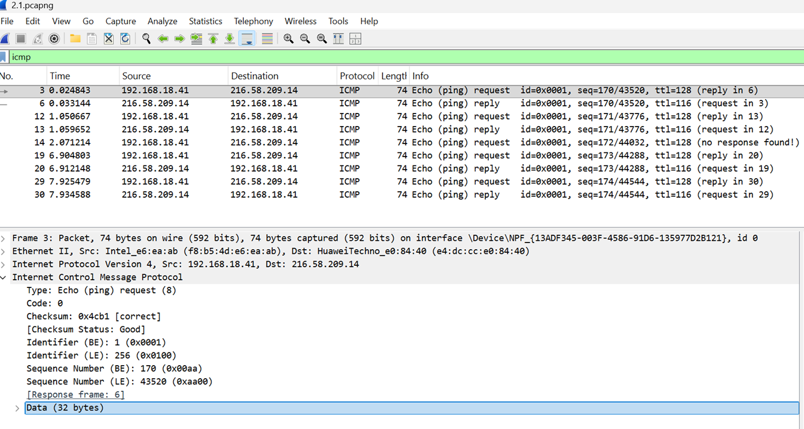
Image 3
The Image 3 shows expanded ICMP Echo Request. The header shows that message type is 8 and Code is 0. It confirms that it’s echo request.
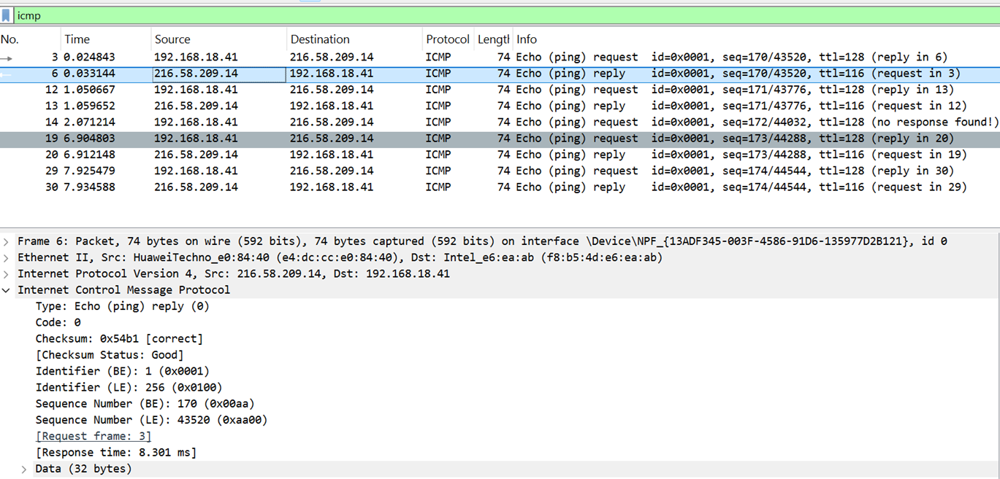
Image 4
The Image 4 shows corresponding ICMP Echo reply. The message type is 0 and code is 0. It confirms the echo reply and proves that target host (google.com) is reachable and successfully responded, therefore verifying connectivity.
From Image 3 and Image 4 we can see that there is no TCP or UDP header above ICMP layer. It proves that ICMP bypasses the Transport Layer (L4) and operates exclusively at Network Layer (L3), because it doesn’t rely on any port numbers.
Step 3: Network Foundation
The ICMP packet must be framed and routed by lower layers
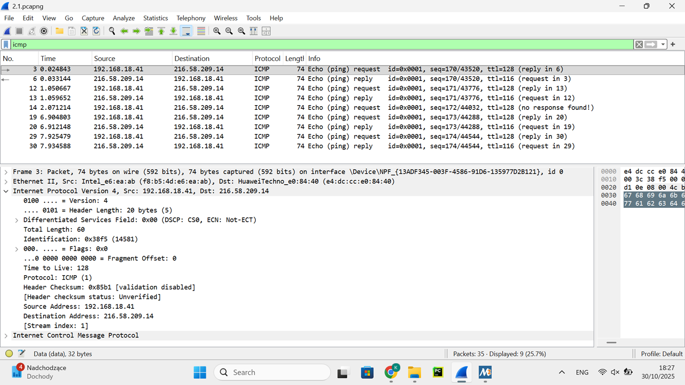
Image 5
L3 Network Layer: Image 5 shows expanded Internet Protocol Version 4 (IPV4) header encapsulating the ICMP message. The information about Source address (192.168.18.41) and Destination address (216.58.209.14) confirms that Network Layer is responsible for logical addressing and routing.
L2 Data link layer: Image 5 shows header of Ethernet II, where we can see Source MAC Address (Intel…) and Destination MAC Address (HuaweiTechno…). It proves that Data Link layer(including the ARP protocol) handles physical addressing and framing of the packet.
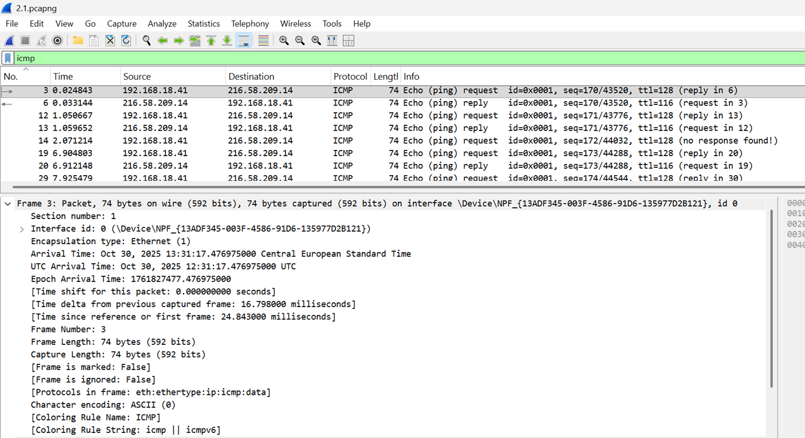
Image 6
L1 Physical layer: Image 6 shows expanded Frame header which includes information such as encapsulation type: Ethernet (1), frame length: 74 bytes (592 bits) or unique interface ID. These details confirm conversion from digital data to electric signals proving successful operation on Physical layer.
Protocols Involved in Secure File Transfer (Task 2.2)
I. Introduction
The objective of this task was to securely upload an image file to the remote server studife.it.p.lodz.pl and analyze the communication. The file transfer was executed using the graphical client FileZilla, which relies on the SFTP (SSH File Transfer Protocol), operating over the SSH (Secure Shell) tunnel. The analysis identifies protocols across all layers (L7 down to L1), with a heavy focus on the security mechanisms in Layers 5 and 6.
II. Execution Proof and Command Documentation
The secure transfer was executed using the FileZilla client, configured for the standard on-campus port (22).
Step 1: Wireshark Capture Setup
The packet capture was isolated specifically to the host and port required for the connection.
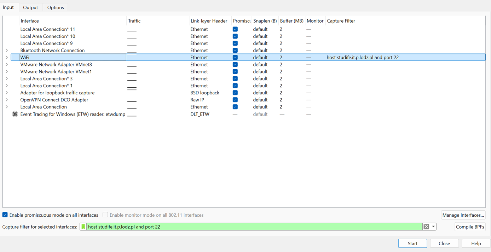
Image 7
The Image 7 shows that Capture Filter was set to host studife.it.p.lodz.pl and port 22. This confirms Wireshark was correctly configured to filter traffic destined for the server on the standard SSH port (22).
Step 2 : File Transfer Execution
The secure connection was established, and the file was successfully transferred.
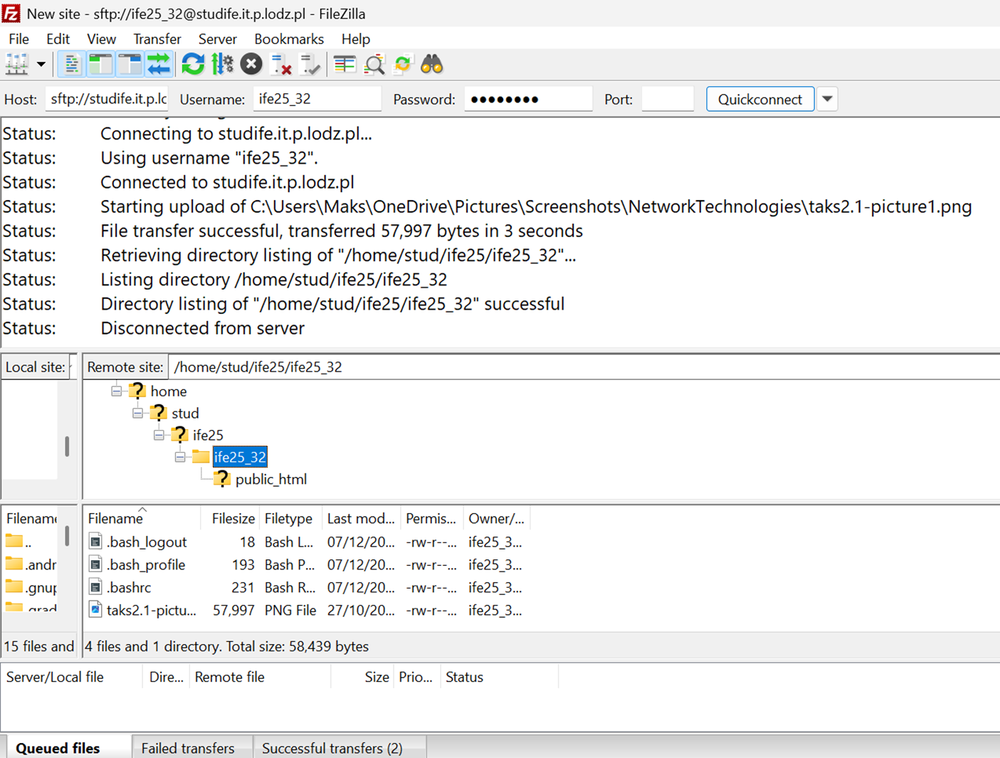
Image 8
L7 Application Layer: SSH File Transfer Protocol (SFTP): The Status Log shows "File transfer successful," confirming successful execution of the SFTP Application Layer (L7) function. The connection details confirm the use of user ife25_32 and Port 22.
III. Protocol Dissection and ISO/OSI Analysis
Step 1: Connection Initiation (L4 Transport)
The communication begins by establishing a reliable connection channel.
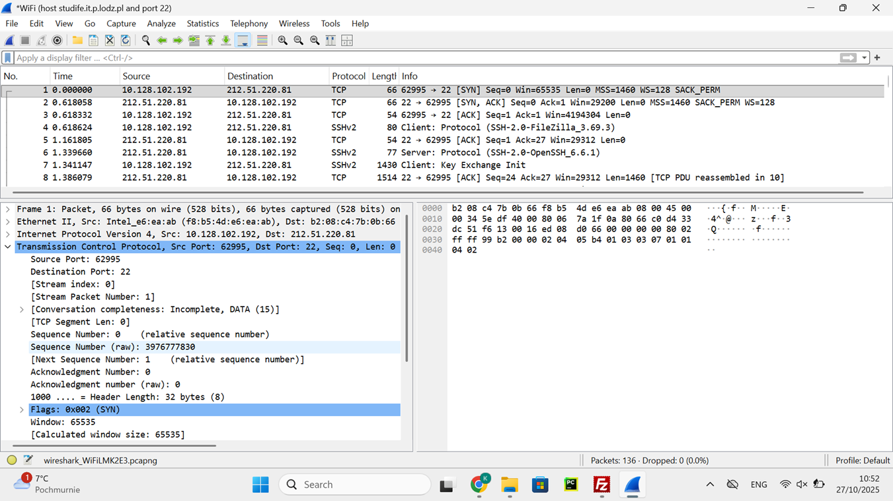
Image 9
L4 Transport Layer: Transmission Control Protocol (TCP): The transfer relies on the TCP three-way handshake (SYN, SYN-ACK, ACK). This ensures that all parts of the file are sent and received in the correct order without loss.
In Image 9, the first packet shows a TCP SYN request to Destination Port 22, confirming the start of the handshake and proving that the Transport Layer provides reliable and secure data delivery.
Step 2: Security Establishment
After the reliable TCP connection is created, the SSH protocol takes over to provide secure communication, working across the Session (L5) and Presentation (L6) layers.
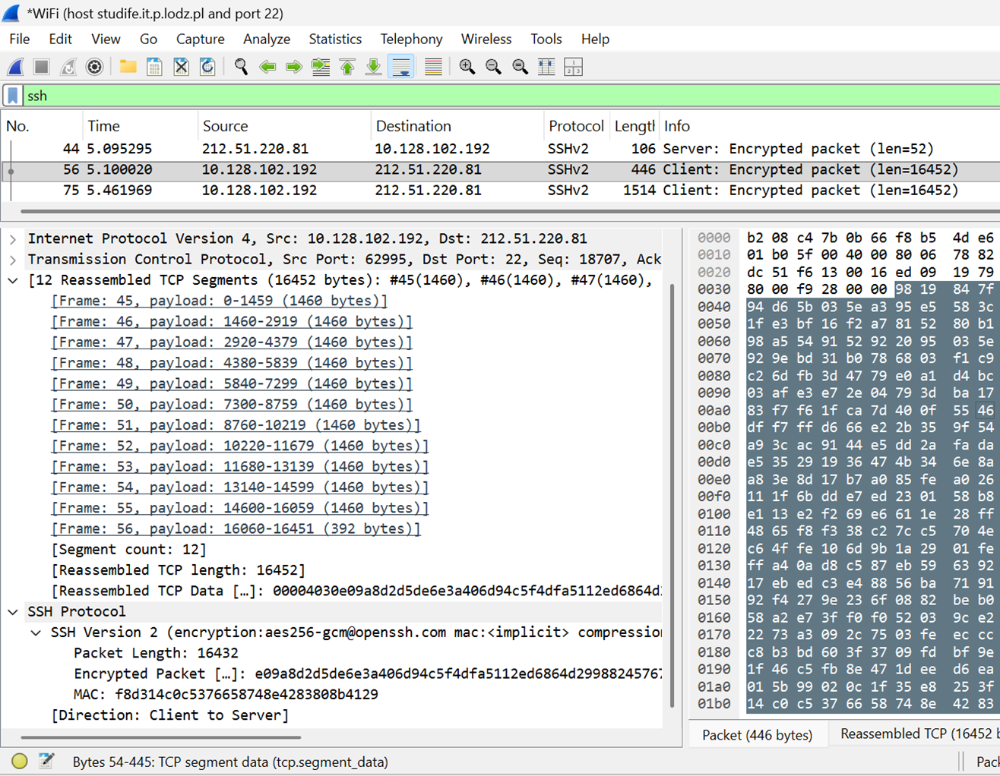
Image 10
L6 Presentation Layer: In Image 10, packets labeled “Encrypted packet (len=16452)” confirm that the Presentation Layer applied encryption through key exchange and cipher negotiation. This ensures that the transmitted data remains confidential and protected.
L5 Session Layer: The SSH protocol manages user authentication, session setup, and communication channels, maintaining a stable and continuous connection. This demonstrates the Session Layer’s role in managing and controlling the ongoing secure session.
L7 Application Layer: SFTP/SCP: At the Application Layer, SFTP (or SCP) is responsible for the actual file transfer process. In Image 10, the large, encrypted data segments represent the file data being transmitted, confirming that this layer handles the user-level transfer operations. SFTP manages commands such as copying files and accessing directories, while relying on the secure tunnel created by the SSH protocol at the Session (L5) and Presentation (L6) layers.
Step 3: Network Foundation
Once the secure connection is established, the packets must be properly framed and routed.
L3 Network Layer: Internet Protocol Version 4 (IPv4): Images 9 and 10 display the expanded Internet Protocol Version 4 (IPv4) header. The presence of the Source Address (10.128.102.192) and Destination Address (212.51.220.81) confirms that the Network Layer manages logical addressing and routing, ensuring the secure packets reach their intended destination across multiple networks.
L2 Data link layer: Image 9 shows the Ethernet II header, which provides local physical addressing using MAC addresses. The inclusion of the Address Resolution Protocol (ARP) at this layer is essential, as it resolves the Destination MAC Address before transmission, allowing successful delivery of the packet within the local network segment.
L1 Physical layer: The Frame header visible in Images 3 and 4 demonstrates the conversion of digital data into a raw bitstream that travels through the physical network medium (such as Ethernet cables). This confirms that the Physical Layer is responsible for the actual transmission of the secure packets across the hardware medium.
Protocols Involved in Webpage Access (Task 2.3)
I. Introduction
The objective of this task was to access the webpage it.p.lodz.pl and analyze all protocols involved. Although web access often begins with HTTP, the analysis confirms this institutional site uses HTTPS (HTTP over TLS), making the focus the identification and classification of the security layers (TLS/SSL) alongside the application and transport protocols.
II. Execution Proof and Command Documentation
The execution involved clearing local DNS and browser caches, followed by accessing the target URL in a web browser to ensure a clean capture of the full security establishment process.
Step 1: Initial Protocol Activity: Name Resolution
The communication chain must begin by translating the hostname to an IP address.
L7 Application Layer: Domain Name Resolution (DNS): The computer first converts it.p.lodz.pl into an IP address.
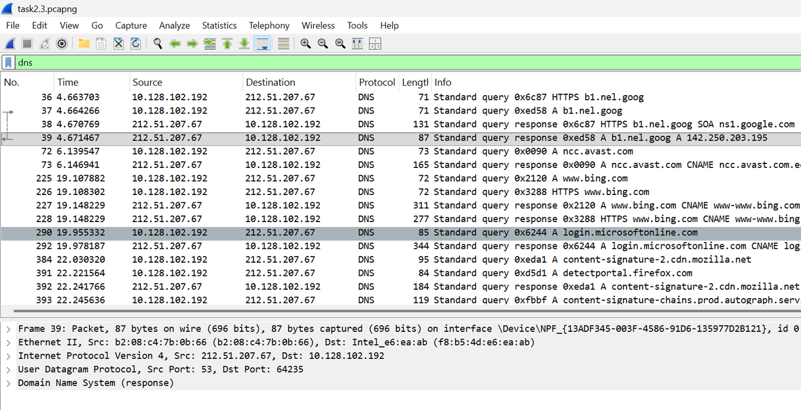
Image 11
Image 11 shows that DNS Queries are sent to find the address.
L4 Transport Layer: User Datagram Protocol (UDP): The DNS query is sent via UDP on Port 53. UDP is chosen because it is connectionless, prioritizing speed for fast lookups.
III. Protocol Dissection and ISO/OSI Analysis
Step 1: Security Establishment
Once the IP address is known, the browser initiates the secure connection stream, engaging the security layers.
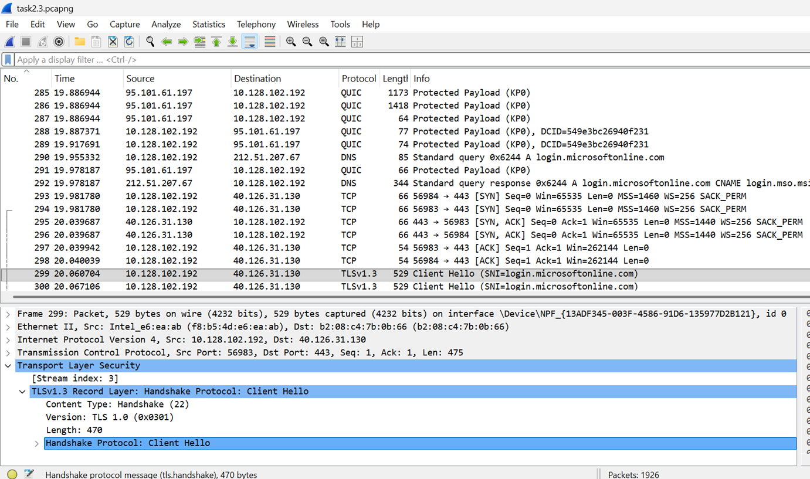
Image 12
L4 Transport Layer: Transmission Control Protocol (TCP): The connection is established via the TCP three-way handshake (visible in Image 12), ensuring a reliable, ordered stream of data over Port 443 (the standard HTTPS port).
L6 Presentation Layer & L5 Session Layer: TLS/SSL: The Transport Layer Security (TLS) protocol immediately takes over to provide the necessary security.
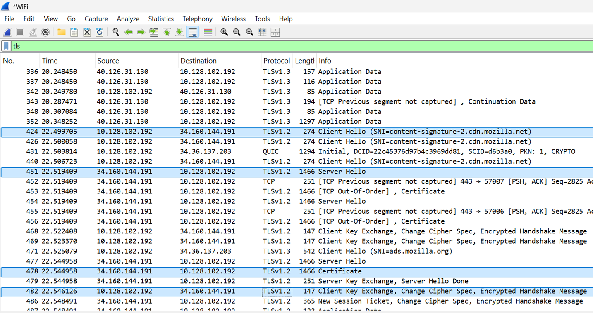
Image 13
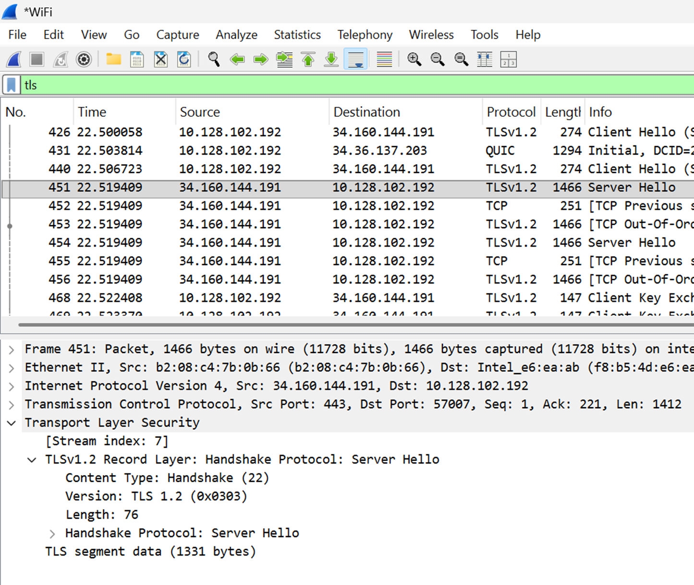
Image 14
L6 (Presentation Layer) Proof: Image 14 shows the expanded TLSv1.2 Server Hello. This process (the TLS Handshake) proves the Presentation Layer successfully negotiated and established the encryption keys, fulfilling its duty of providing data confidentiality.
L5 (Session Layer) Proof: In Image 13 we can see that the TLS protocol manages the authentication (via certificates) and maintains the secure communication channel, fulfilling the Session Layer role of managing the connection state.
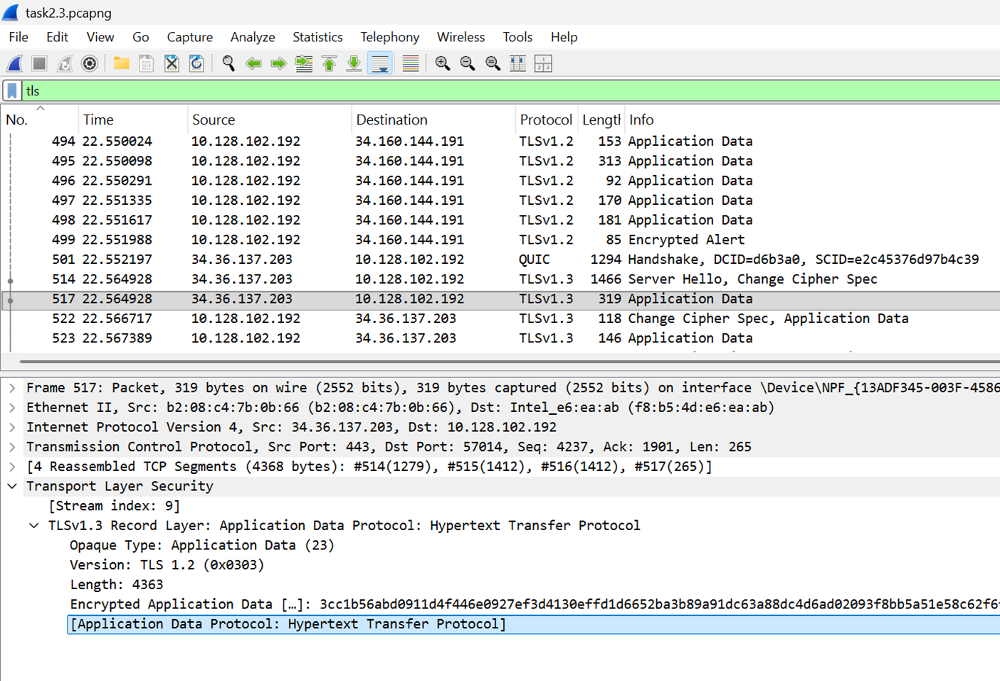
Image 15
L7 Application Layer: HTTP(Encapsulated): The core protocol is Hypertext Transfer Protocol (HTTP). Image shows the TLS Record Layer explicitly carrying the "Application Data Protocol: Hypertext Transfer Protocol." This confirms that HTTP manages the delivery of the webpage content and data, relying entirely on the TLS tunnel established at L5/L6 to provide the required security.
Step 2: Network Foundation
The secure packets must be framed and routed across the local campus network and the internet.
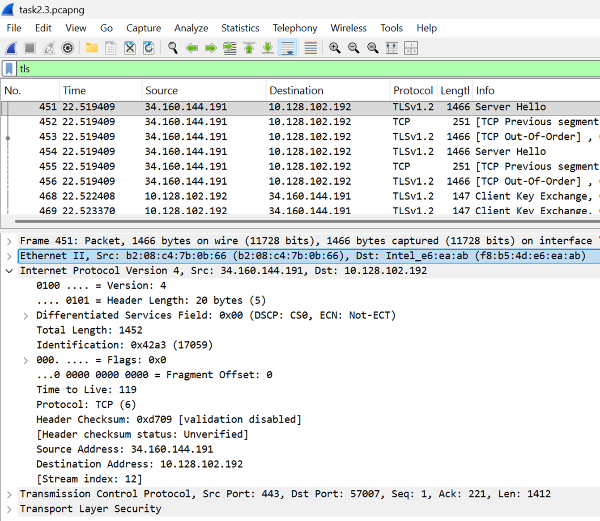
Image 16
L3 Network Layer: Internet Protocol Version 4 (IPv4): Image 16 shows the expanded Internet Protocol Version 4 header. The presence of Source Address (34.168.144.191) and Destination Address (10.128.102.192) confirms that the Network Layer handles logical addressing and routing the secure packets to their destination.
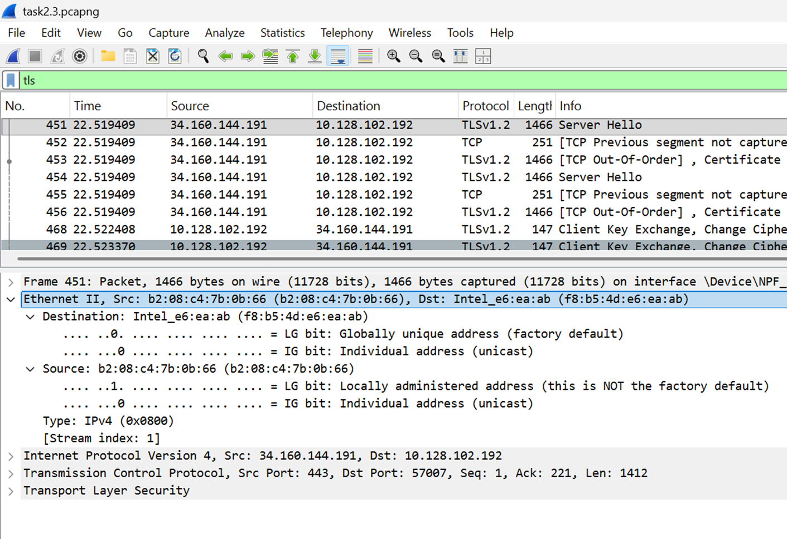
Image 17
L2 Data link layer: Image 17 shows the header of Ethernet II. This proves the Data Link Layer handles local physical addressing. The Address Resolution Protocol (ARP) is included as a Layer 2 protocol, as it is responsible for resolving the Destination MAC Address shown in the header, which is a mandatory step for local physical delivery.
L1 Physical layer: The Frame header (visible in Image 17) confirms the conversion of the digital data into the raw bit stream transmitted across the physical network medium.
Protocols Involved in Webpage Access (Task 2.4)
I. Introduction
The objective of this task was to access the institutional webpage studife.it.p.lodz.pl and analyze all protocols involved. The analysis confirms this server handles requests via HTTP (Port 80), which lacks security. The focus of the report is to identify and classify the entire protocol stack (L7 down to L1) and provide empirical proof of the vulnerability resulting from the omission of the security layer.
II. Execution Proof and Command Documentation
The execution involved clearing local DNS and browser caches, followed by accessing the target URL in a web browser to ensure a clean capture of the full communication.
Step 1: Initial Protocol Activity: Name Resolution
The communication chain must begin by translating the hostname to an IP address.
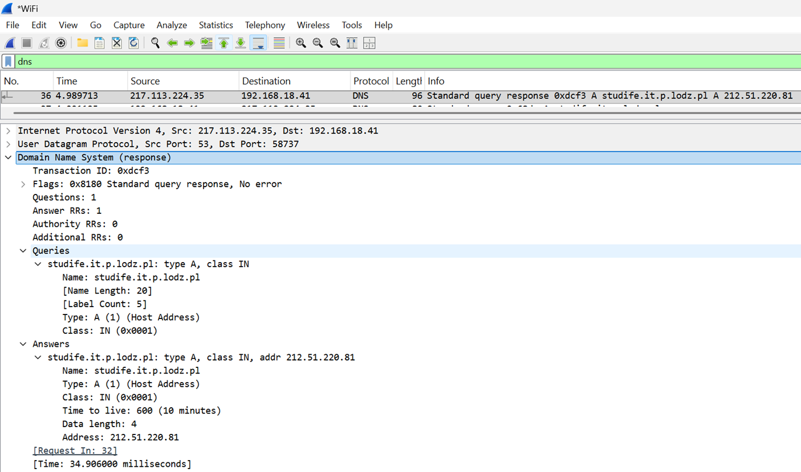
Image 18
L7 Application Layer: Domain Name Resolution (DNS): The computer first converts studife.it.p.lodz.pl into an IP address. Image 18 confirms that the DNS Query was sent and the Response returned the IP address 212.51.220.81 for the server.
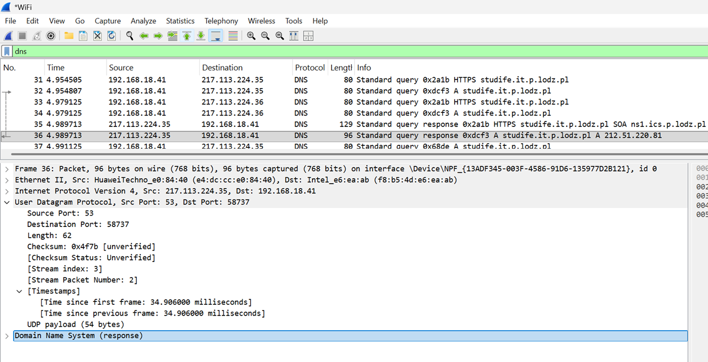
Image 19
L4 Transport Layer: User Datagram Protocol (UDP): The DNS query is sent via UDP on Port 53 (visible in Image 19). UDP is chosen because it is connectionless, prioritizing speed for fast lookups.
III. Protocol Dissection and ISO/OSI Analysis
Step 1: Web Access and Vulnerability (L7 Core)
Once the IP address is known, the browser establishes the content delivery stream using the unsecured protocol.
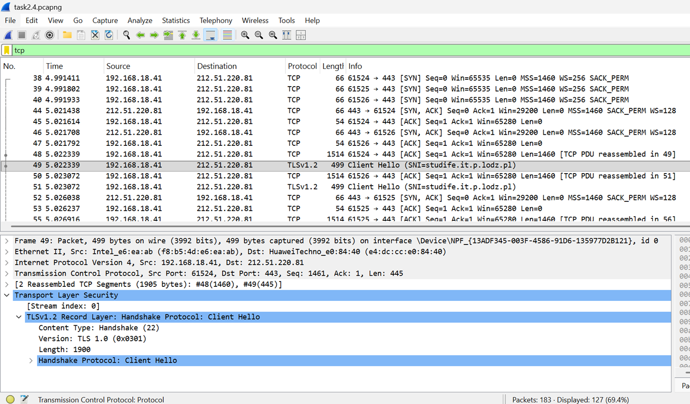
Image 20
L4 Transport Layer: Transmission Control Protocol (TCP): The connection is established via the TCP three-way handshake (visible in Image 20), ensuring a reliable, ordered stream of data over the standard Port 80 (the unsecured HTTP port).
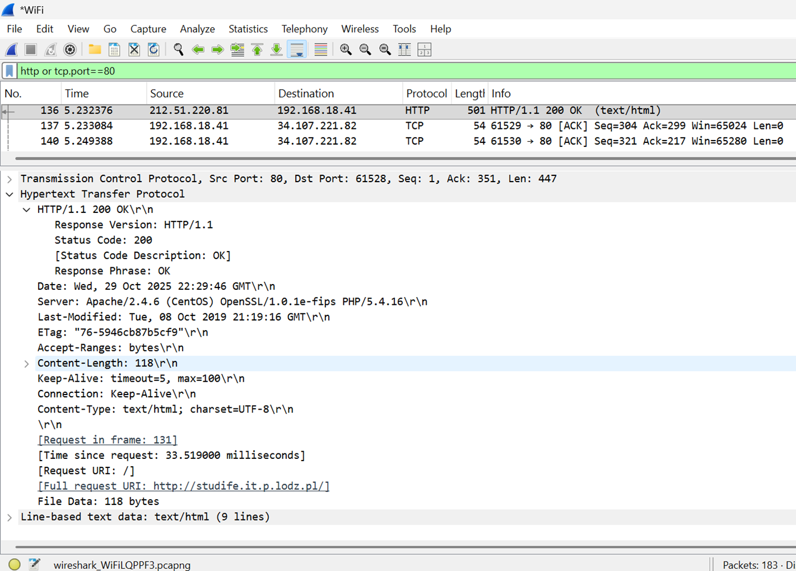
Image 21
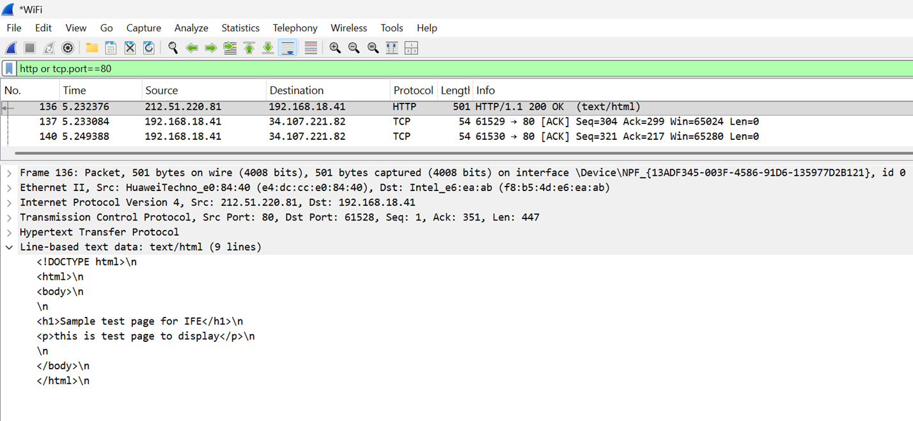
Image 22
L7 Application Layer: HTTP (Unsecured): The core protocol is Hypertext Transfer Protocol (HTTP). This protocol manages the content requests and data delivery. Image 21 and Image 22 show the expanded HTTP response packet, specifically the Line-based text data (HTML source code) section.
L6 Bypass: The fact that the entire HTML source code is displayed in cleartext (readable) proves the Presentation Layer (L6) was omitted/bypassed. This omission confirms the data is vulnerable and lacks confidentiality.
Step 2: Network Foundation
The HTTP packet must be framed and routed by the physical infrastructure protocols.
L3 Network Layer: Internet Protocol Version 4 (IPv4): Image 22 shows the Internet Protocol Version 4 header. The presence of Source Address (34.107.221.82) and Destination Address (10.128.102.192) confirms that the Network Layer handles logical addressing and routing the packet.
L2 Data link layer: Image 22 shows the header of Ethernet II. This proves the Data Link Layer handles local physical addressing. The Address Resolution Protocol (ARP) is included as a Layer 2 protocol, as it is responsible for resolving the Destination MAC Address shown in the header, which is a mandatory step for local physical delivery.
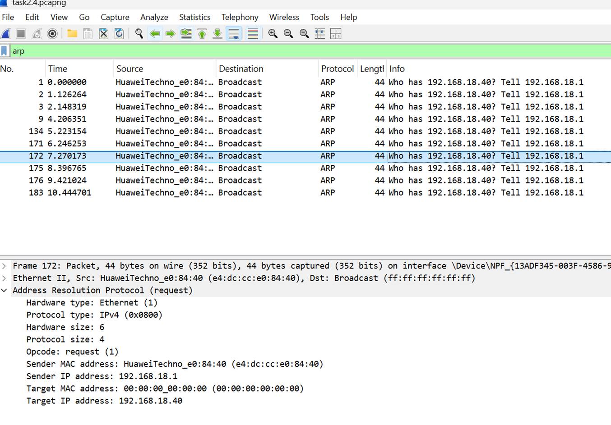
Image 23
The Address Resolution Protocol (ARP) is empirically demonstrated in Image 23. This protocol operates exclusively at Layer 2 to resolve the IP address of the local gateway (router) into the physical MAC Address, which is the necessary step taken before the Ethernet II header (L2 frame) can be constructed for the HTTP packet.
L1 Physical layer: The Frame header (visible in Image 4) confirms the transmission of the raw bit stream across the physical medium.